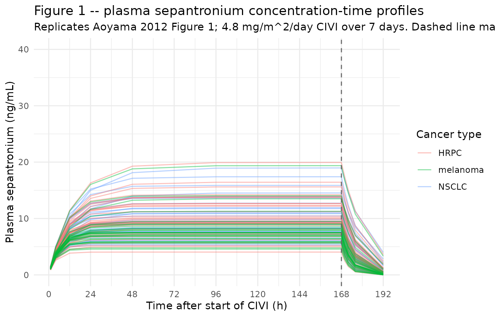
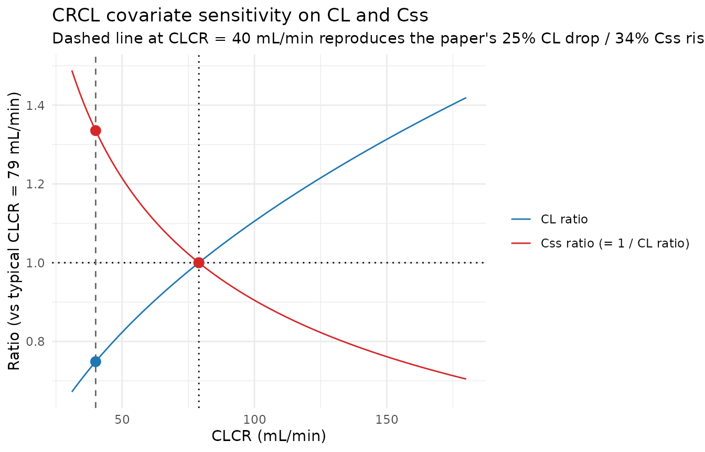

Sepantronium (Aoyama 2012)
Source:vignettes/articles/Aoyama_2012_sepantronium.Rmd
Aoyama_2012_sepantronium.RmdModel and source
mod_meta <- nlmixr2est::nlmixr(readModelDb("Aoyama_2012_sepantronium"))$meta
#> ℹ parameter labels from comments will be replaced by 'label()'- Citation: Aoyama Y, Kaibara A, Takada A, Nishimura T, Katashima M, Sawamoto T. Population pharmacokinetic modeling of sepantronium bromide (YM155), a small molecule survivin suppressant, in patients with non-small cell lung cancer, hormone refractory prostate cancer, or unresectable stage III or IV melanoma. Invest New Drugs. 2013;31(2):443-451. doi:10.1007/s10637-012-9867-x
- Description: One-compartment IV population PK model for sepantronium bromide (YM155), a small-molecule survivin suppressant administered as a 7-day continuous IV infusion every 21 days, with power-form covariate effects of creatinine clearance and alanine aminotransferase and proportional cancer-type effects (hormone-refractory prostate cancer and melanoma vs non-small cell lung cancer) on clearance, in adults with NSCLC, HRPC, or unresectable stage III/IV melanoma (Aoyama 2012)
- Article (DOI): https://doi.org/10.1007/s10637-012-9867-x
This vignette validates the packaged
Aoyama_2012_sepantronium model – a one-compartment IV
population PK model for sepantronium bromide (YM155), a small-molecule
survivin suppressant given as a 7-day continuous IV infusion (CIVI)
every 21 days, in 96 adult patients with non-small-cell lung cancer
(NSCLC), hormone-refractory prostate cancer (HRPC; modern term
castration- resistant prostate cancer / CRPC), or unresectable stage
III/IV melanoma – against the source publication’s Table 3 (final-model
parameter estimates), Table 4 (bootstrap confidence intervals), and the
paper’s explicit covariate- effect prediction that moderately impaired
renal function (CLCR = 40 mL/min) contributes a 25% decrease in CL and
consequently a 34% increase in steady- state plasma concentration (CSS)
during the CIVI.
Population
The Aoyama 2012 analysis pooled 578 plasma sepantronium concentrations from 96 adult patients (17 female, 79 male) enrolled in three open-label multicenter Phase 2 trials: LUCY (NSCLC, 33 patients, Europe), PACY (HRPC, 34 patients, North America), and MACY (unresectable stage III/IV melanoma, 29 patients, North America). Median age was 64 years (range 29-90); median body weight 81 kg (range 50-114); median BSA 1.97 m^2 (range 1.48-2.40); median Cockcroft-Gault creatinine clearance 79 mL/min (range 31-180); median ALT 20 U/L (range 6-185). All HRPC patients were male and all NSCLC patients were Caucasian; ECOG performance status was 0-1 in melanoma and 0-2 in the other two trials. Each patient received sepantronium 4.8 mg/m^2/day as a continuous IV infusion over 7 days (168 h) every 21 days; the first dose was computed from actual body surface area. Concentrations were measured by LC-MS/MS at PPD Central Laboratory with a lower limit of quantitation of 0.05 ng/mL.
The same information is available programmatically via the model’s
population metadata:
str(mod_meta$population)
#> List of 16
#> $ species : chr "human"
#> $ n_subjects : int 96
#> $ n_studies : int 3
#> $ age_range : chr "29-90 years"
#> $ age_median : chr "64 years"
#> $ weight_range : chr "50-114 kg"
#> $ weight_median : chr "81 kg"
#> $ sex_female_pct : num 17.7
#> $ race_ethnicity : Named num [1:4] 4.2 45.8 8.3 41.7
#> ..- attr(*, "names")= chr [1:4] "African American" "Caucasian (unspecified Hispanic status)" "Caucasian Hispanic or Latino" "Caucasian non-Hispanic or Latino"
#> $ disease_state : chr "Advanced solid tumors: non-small cell lung cancer (NSCLC) 34.4%, hormone-refractory prostate cancer (HRPC; mode"| __truncated__
#> $ dose_range : chr "4.8 mg/m^2/day continuous IV infusion (CIVI) over 7 days (168 h) every 21 days; first cycle's dose computed usi"| __truncated__
#> $ regions : chr "NSCLC cohort enrolled in Europe (LUCY trial); HRPC and melanoma cohorts enrolled in North America (PACY and MACY trials)"
#> $ ecog_distribution: chr "ECOG 0 (asymptomatic) 39.6%, ECOG 1 (symptomatic) 55.2%, ECOG 2 (ambulatory <50%) 5.2%; melanoma trial accepted"| __truncated__
#> $ renal_function : chr "Cockcroft-Gault creatinine clearance 31-180 mL/min (median 79); raw mL/min, NOT BSA-normalized"
#> $ hepatic_function : chr "Baseline ALT 6-185 U/L (median 20); AST 12-92 U/L (median 25); no patients with severe hepatic impairment enrol"| __truncated__
#> $ notes : chr "Baseline demographics per Aoyama 2012 Table 2 (N = 96; 578 plasma sepantronium concentrations across cycles 1-6"| __truncated__Source trace
The per-parameter origin is recorded as an in-file comment next to
each ini() entry in
inst/modeldb/specificDrugs/Aoyama_2012_sepantronium.R. The
table below collects them in one place; values come from Aoyama 2012
Table 3 final-model “Estimate” column unless otherwise noted.
| Parameter / equation | Value | Source location |
|---|---|---|
lcl (Clearance) |
log(42.1) | Table 3 row “CL (L/h)” final model |
lvc (Central volume of distribution) |
log(319) | Table 3 row “V (L)” final model |
e_crcl_cl (CLCR power exponent on CL) |
0.425 | Table 3 row “CL CR (power)” final model |
e_alt_cl (ALT power exponent on CL) |
0.124 | Table 3 row “ALT (power)” final model |
e_hrpc_cl (HRPC proportional effect on CL) |
-0.045 | Table 3 row “HRPC (ratio)” = 0.955; proportional form (0.955 - 1) |
e_mel_cl (Melanoma proportional effect on CL) |
+0.24 | Table 3 row “MM (ratio)” = 1.24; proportional form (1.24 - 1) |
etalcl ~ 0.0385 |
0.0385 | Table 3 row “Random effect on CL” final model |
propSd <- sqrt(0.0934) |
0.306 | Table 3 row “Random effect on Cp (Residual error) w/o outliers” final model; sqrt of reported sigma^2 |
cl <- exp(lcl + etalcl) * (CRCL/79)^0.425 * (ALT/20)^0.124 * (1 + e_hrpc_cl * TUMTP_HRPC) * (1 + e_mel_cl * TUMTP_MEL) |
n/a | Methods Eqs. (1), (3), (4) and final-model expression Eq. shown after Table 2 |
d/dt(central) (one-compartment elimination) |
n/a | Methods page 444 (“A one-compartment model was applied … ADVAN1 and TRANS2”); Eq. (1) |
Cc ~ prop(propSd) |
n/a | Methods Eq. (2) proportional residual error |
The paper also reports a second proportional residual-error term
(sigma^2 = 31.6) applied to 11 of 96 patients classified as
having one or more “outlier” concentrations (post-hoc IQR rule,
Q3 + 3 * IQR = 23.13 ng/mL). That second residual error is
data-driven and is documented in the Assumptions and deviations section
rather than encoded in the model.
Virtual cohort
The original observed sepantronium concentrations are not publicly available. The virtual cohort below approximates the Aoyama 2012 Table 2 demographics: 96 adult patients across the three cancer cohorts (NSCLC n = 33, HRPC n = 34, melanoma n = 29), with body surface area and the continuous covariates CRCL and ALT drawn to span the published ranges and medians. Each subject receives a single first cycle of 4.8 mg/m^2/day CIVI over 168 h, sampled during the CIVI period and after stop of CIVI, with the 21-day cycle continuing as the observation window.
set.seed(20260520)
# Cohort sizes from Aoyama 2012 Table 1
n_nsclc <- 33L
n_hrpc <- 34L
n_mel <- 29L
n_total <- n_nsclc + n_hrpc + n_mel
# BSA: log-normal centered on the reported median 1.97 m^2 with SD chosen
# so the simulated range covers ~ Table 2 (1.48-2.40 m^2). Constrain to the
# observed bounds.
bsa_draw <- function(n) {
s <- exp(rnorm(n, mean = log(1.97), sd = log(2.40 / 1.48) / 4))
pmin(pmax(s, 1.48), 2.40)
}
# CRCL: log-normal centered on the reported median 79 mL/min, range 31-180.
crcl_draw <- function(n) {
s <- exp(rnorm(n, mean = log(79), sd = log(180 / 31) / 4))
pmin(pmax(s, 31), 180)
}
# ALT: log-normal centered on the reported median 20 U/L, range 6-185.
alt_draw <- function(n) {
s <- exp(rnorm(n, mean = log(20), sd = log(185 / 6) / 4))
pmin(pmax(s, 6), 185)
}
# Helper to build one cancer-type cohort with disjoint id range.
make_cohort <- function(n, cancer, id_offset = 0L) {
tibble::tibble(
id = id_offset + seq_len(n),
cancer = cancer,
TUMTP_HRPC = as.integer(cancer == "HRPC"),
TUMTP_MEL = as.integer(cancer == "melanoma"),
BSA = bsa_draw(n),
CRCL = crcl_draw(n),
ALT = alt_draw(n)
)
}
cov_tab <- bind_rows(
make_cohort(n_nsclc, "NSCLC", id_offset = 0L),
make_cohort(n_hrpc, "HRPC", id_offset = n_nsclc),
make_cohort(n_mel, "melanoma", id_offset = n_nsclc + n_hrpc)
)
stopifnot(nrow(cov_tab) == n_total,
anyDuplicated(cov_tab$id) == 0L)
# Per-cycle dose and CIVI duration. Cycle 1 only -- 7 days CIVI followed by
# 14 days off; observation window 0-21 days.
civi_duration_h <- 7 * 24 # 168 h CIVI
cycle_duration_h <- 21 * 24 # 504 h total cycle
sample_times_h <- c(0, 1, 4, 12, 24, 48, 96, 168, # during CIVI
168.5, 169, 170, 172, 176, 192, 240, 336, 504) # after CIVI
make_subject <- function(idx, row) {
amt <- 4.8 * row$BSA * 7 # mg total over the 168-h CIVI
rate <- amt / civi_duration_h # mg/h constant rate
doses <- tibble::tibble(
id = idx, time = 0,
evid = 1L, amt = amt,
rate = rate, dv = NA_real_
)
obs <- tibble::tibble(
id = idx, time = sample_times_h,
evid = 0L, amt = NA_real_,
rate = NA_real_, dv = NA_real_
)
bind_rows(doses, obs) |>
mutate(
cancer = row$cancer,
TUMTP_HRPC = row$TUMTP_HRPC,
TUMTP_MEL = row$TUMTP_MEL,
BSA = row$BSA,
CRCL = row$CRCL,
ALT = row$ALT
) |>
arrange(time, desc(evid))
}
events <- bind_rows(lapply(seq_len(nrow(cov_tab)), function(i) {
make_subject(idx = cov_tab$id[i], row = cov_tab[i, ])
}))
stopifnot(!anyDuplicated(unique(events[, c("id", "time", "evid")])))Simulation
mod <- readModelDb("Aoyama_2012_sepantronium")
mod_typical <- rxode2::zeroRe(mod)
#> ℹ parameter labels from comments will be replaced by 'label()'
sim_typical <- rxode2::rxSolve(
object = mod_typical, events = events,
keep = c("cancer", "TUMTP_HRPC", "TUMTP_MEL", "BSA", "CRCL", "ALT")
) |>
as.data.frame()
#> ℹ omega/sigma items treated as zero: 'etalcl'
#> Warning: multi-subject simulation without without 'omega'
sim_stoch <- rxode2::rxSolve(
object = mod, events = events,
keep = c("cancer", "TUMTP_HRPC", "TUMTP_MEL", "BSA", "CRCL", "ALT")
) |>
as.data.frame()
#> ℹ parameter labels from comments will be replaced by 'label()'Replicate published figures
Figure 1 – plasma sepantronium concentration-time profiles
Aoyama 2012 Figure 1 shows individual plasma sepantronium concentrations during and after the 7-day CIVI at 4.8 mg/m^2/day. Observed concentrations during the CIVI cluster around a typical Css of ~5-15 ng/mL with notable between-subject variability; concentrations decline rapidly after stop of CIVI consistent with a terminal half-life of ~5 h.
# Replicates Figure 1 of Aoyama 2012: individual concentration-time profiles
# across the 7-day CIVI and 24 h post-CIVI window.
sim_stoch |>
filter(time > 0, time <= 192) |>
ggplot(aes(time, Cc, group = id, colour = cancer)) +
geom_line(alpha = 0.45) +
geom_vline(xintercept = 168, linetype = "dashed", colour = "gray40") +
scale_x_continuous(breaks = c(0, 24, 48, 72, 96, 120, 144, 168, 192)) +
scale_y_continuous(limits = c(0, 40)) +
labs(
x = "Time after start of CIVI (h)",
y = "Plasma sepantronium (ng/mL)",
colour = "Cancer type",
title = "Figure 1 -- plasma sepantronium concentration-time profiles",
subtitle = "Replicates Aoyama 2012 Figure 1; 4.8 mg/m^2/day CIVI over 7 days. Dashed line marks end of CIVI."
) +
theme_minimal()
Typical-value steady-state across cancer types
The paper’s primary exposure metric is the steady-state plasma
sepantronium concentration during the CIVI (CSS), computed as
CSS = dose_rate / CL. Holding all covariates at their
reference values, the model predicts a typical Css around 7-12 ng/mL for
a BSA of ~1.97 m^2 with reasonable CRCL and ALT, and the cancer-type
effect should give melanoma > NSCLC > HRPC by proportional changes
of +24% and -4.5% respectively (relative to NSCLC).
typical_css <- sim_typical |>
filter(time > 96, time <= 168) |> # late portion of CIVI -> near Css
group_by(cancer) |>
summarise(
median_css = median(Cc, na.rm = TRUE),
q05 = quantile(Cc, 0.05, na.rm = TRUE),
q95 = quantile(Cc, 0.95, na.rm = TRUE),
.groups = "drop"
)
knitr::kable(typical_css,
caption = "Typical-value (zeroRe) steady-state Cc (ng/mL) by cancer type during the last 72 h of CIVI.")| cancer | median_css | q05 | q95 |
|---|---|---|---|
| HRPC | 10.369555 | 5.779975 | 13.63887 |
| NSCLC | 9.699526 | 5.906909 | 14.34861 |
| melanoma | 7.665250 | 5.435493 | 10.03256 |
CRCL covariate sensitivity – the paper’s 25% / 34% prediction
Aoyama 2012 explicitly predicts that a patient with moderately
impaired renal function (CLCR = 40 mL/min, vs the population reference
of 79 mL/min) has 25% lower CL and consequently a 34% higher
steady-state plasma sepantronium concentration. The relation
(40/79)^0.425 = 0.749 reproduces the 25.1% CL reduction;
the reciprocal 1 / 0.749 - 1 = 33.5% reproduces the 33.5%
Css increase. The figure below shows the simulated Css ratio across the
published CRCL range relative to the reference at 79 mL/min for an
otherwise typical NSCLC patient (ALT 20 U/L, BSA 1.97 m^2).
crcl_grid <- seq(31, 180, by = 1)
crcl_factor_cl <- (crcl_grid / 79)^0.425
crcl_factor_css <- 1 / crcl_factor_cl
published_points <- tibble::tibble(
CRCL = c(40, 79),
ratio_cl = (CRCL / 79)^0.425,
ratio_css = 1 / ratio_cl
)
ggplot(
tibble::tibble(CRCL = crcl_grid,
ratio_cl = crcl_factor_cl,
ratio_css = crcl_factor_css),
aes(CRCL)
) +
geom_line(aes(y = ratio_cl, colour = "CL ratio")) +
geom_line(aes(y = ratio_css, colour = "Css ratio (= 1 / CL ratio)")) +
geom_hline(yintercept = 1.0, linetype = "dotted") +
geom_vline(xintercept = 79, linetype = "dotted") +
geom_vline(xintercept = 40, linetype = "dashed", colour = "gray40") +
geom_point(data = published_points,
aes(y = ratio_cl), colour = "#1f77b4", size = 3) +
geom_point(data = published_points,
aes(y = ratio_css), colour = "#d62728", size = 3) +
scale_colour_manual(values = c("CL ratio" = "#1f77b4",
"Css ratio (= 1 / CL ratio)" = "#d62728")) +
labs(
x = "CLCR (mL/min)",
y = "Ratio (vs typical CLCR = 79 mL/min)",
colour = NULL,
title = "CRCL covariate sensitivity on CL and Css",
subtitle = "Dashed line at CLCR = 40 mL/min reproduces the paper's 25% CL drop / 34% Css rise."
) +
theme_minimal()
knitr::kable(
tibble::tibble(
CLCR_mL_per_min = c(31, 40, 79, 100, 180),
CL_ratio_vs_typical = round((CLCR_mL_per_min / 79)^0.425, 3),
Css_ratio_vs_typical = round(1 / (CLCR_mL_per_min / 79)^0.425, 3)
),
caption = "CRCL covariate effect on CL and Css (typical NSCLC patient)."
)| CLCR_mL_per_min | CL_ratio_vs_typical | Css_ratio_vs_typical |
|---|---|---|
| 31 | 0.672 | 1.488 |
| 40 | 0.749 | 1.335 |
| 79 | 1.000 | 1.000 |
| 100 | 1.105 | 0.905 |
| 180 | 1.419 | 0.705 |
PKNCA validation
The Aoyama 2012 paper does not tabulate Cmax / Cmin / AUC by patient
stratum; the published exposure metric is Css computed analytically as
dose / CL (paper Eq. 6). PKNCA is nonetheless used here to
summarise Cmax, Cmin (at end of CIVI), AUClast (over the full 21-day
cycle), and AUC over the CIVI window per cancer type, as an internal
sanity check on the simulation pipeline. The PKNCA formula carries
cancer as the grouping variable so per-cohort comparisons
against the model’s analytic Css are possible.
sim_for_nca <- sim_stoch |>
filter(!is.na(Cc), Cc > 0, time > 0) |>
select(id, time, Cc, cancer) |>
as.data.frame()
doses_for_nca <- events |>
filter(evid == 1L) |>
select(id, time, amt, cancer) |>
as.data.frame()
conc_obj <- PKNCA::PKNCAconc(
data = sim_for_nca,
formula = Cc ~ time | cancer + id,
concu = "ng/mL",
timeu = "hr"
)
dose_obj <- PKNCA::PKNCAdose(
data = doses_for_nca,
formula = amt ~ time | cancer + id,
doseu = "mg"
)
intervals <- data.frame(
start = c(96, 0),
end = c(168, 504),
cmax = c(TRUE, TRUE),
cmin = c(TRUE, FALSE),
cav = c(TRUE, FALSE),
auclast = c(TRUE, TRUE)
)
nca_data <- PKNCA::PKNCAdata(conc_obj, dose_obj, intervals = intervals)
nca_res <- suppressWarnings(PKNCA::pk.nca(nca_data))
knitr::kable(
summary(nca_res),
caption = "Simulated NCA parameters by cancer type (PKNCA): Cmax / Cmin / Cav over the 96-168 h late-CIVI window and AUClast over the full 21-day cycle."
)| Interval Start | Interval End | cancer | N | AUClast (hr*ng/mL) | Cmax (ng/mL) | Cmin (ng/mL) | Cav (ng/mL) |
|---|---|---|---|---|---|---|---|
| 96 | 168 | HRPC | 34 | 688 [37.4] | 9.56 [37.4] | 9.56 [37.4] | 9.56 [37.4] |
| 0 | 504 | HRPC | 34 | NC | 9.56 [37.4] | . | . |
| 96 | 168 | melanoma | 29 | 559 [32.0] | 7.76 [32.0] | 7.76 [32.0] | 7.76 [32.0] |
| 0 | 504 | melanoma | 29 | NC | 7.76 [32.0] | . | . |
| 96 | 168 | NSCLC | 33 | 688 [34.8] | 9.56 [34.8] | 9.56 [34.8] | 9.56 [34.8] |
| 0 | 504 | NSCLC | 33 | NC | 9.56 [34.8] | . | . |
Comparison against the paper’s analytic Css
The paper’s analytic Css for a typical NSCLC patient with BSA 1.97 m^2 and CL 42.1 L/h is
Css = dose_rate / CL = (4.8 * 1.97 / 24) / 42.1 mg/(L) ~ 0.00936 mg/L = 9.36 ng/mL.
For the median-CRCL melanoma patient with the +24% CL effect:
Css ~ 9.36 / 1.24 = 7.55 ng/mL.
For the median-CRCL HRPC patient with the -4.5% CL effect:
Css ~ 9.36 / 0.955 = 9.80 ng/mL.
The PKNCA Cav (typical 96-168 h window) for each cohort
should fall near these values, modulated by the cohort’s CRCL and ALT
distributions.
analytic_css <- tibble::tibble(
cancer = c("NSCLC", "HRPC", "melanoma"),
analytic_css_ng_mL = c(
9.36,
9.36 / (1 - 0.045),
9.36 / (1 + 0.24)
)
)
nca_tbl <- as.data.frame(nca_res$result) |>
filter(PPTESTCD == "cav", start == 96) |>
group_by(cancer) |>
summarise(median_cav_ng_mL = median(PPORRES, na.rm = TRUE),
.groups = "drop")
knitr::kable(
analytic_css |>
left_join(nca_tbl, by = "cancer") |>
mutate(pct_diff = round(100 * (median_cav_ng_mL / analytic_css_ng_mL - 1), 1)),
caption = "Analytic Css vs simulated median Cav (96-168 h) by cancer type."
)| cancer | analytic_css_ng_mL | median_cav_ng_mL | pct_diff |
|---|---|---|---|
| NSCLC | 9.360000 | 9.387469 | 0.3 |
| HRPC | 9.801047 | 9.429037 | -3.8 |
| melanoma | 7.548387 | 7.462717 | -1.1 |
Assumptions and deviations
Single proportional residual error encoded; the paper’s second outlier-patient residual is not. Aoyama 2012 fit two proportional residual-error terms to handle 16 anomalous concentrations from 11 of 96 patients: a typical-patient error (
sigma^2 = 0.0934, SD = 0.306, 30.6% CV) and a much larger outlier-patient error (sigma^2 = 31.6, SD ~ 5.62, applied to the 11 patients with at least one concentration exceeding the post-hoc IQR-based thresholdQ3 + 3 * IQR = 23.13 ng/mL). The outlier classification is data-driven (a post-hoc identification of patients with anomalously high observed concentrations during the CIVI), not a population-level predictor that a simulation of new patients could mimic. The packaged model therefore encodes only the typical-patient residual error; users intending to reproduce the full bimodal residual structure for a re-fit on the original data would need to introduce a per-patient mixture indicator derived from the observed concentrations, which is outside the scope of a simulation-oriented model library.Cancer-type effect form: proportional
(1 + e * I)(mathematically identical to the paper’s power form for a binary indicator). The paper writes the cancer-type effect asTHETA_HRPC^I_HRPC * THETA_MM^I_MMwithTHETA_HRPC = 0.955andTHETA_MM = 1.24(Table 3, “ratio” rows). Because the indicators are binary 0/1, this is exactly equivalent to the proportional form(1 + e_hrpc_cl * I_HRPC) * (1 + e_mel_cl * I_MEL)withe_hrpc_cl = -0.045ande_mel_cl = +0.24used in the model file – both give factor 1.0 atI = 0and factorTHETAatI = 1. The proportional form is used to match the existing Ahamadi 2017 pembrolizumab convention for categorical CL effects ((1 + e_nsclc_cl * TUMTP_NSCLC)).NSCLC is the implicit reference category for cancer type. When both
TUMTP_HRPC = 0andTUMTP_MEL = 0, the model collapses to the NSCLC baseline. NSCLC is therefore NOT carried as a separateTUMTP_NSCLCcolumn input to this model (although a downstream user decomposing a source TUMTP categorical may still want to materialiseTUMTP_NSCLCfor symmetry with other oncology models in the package).Reference covariate values 79 mL/min (CRCL) and 20 U/L (ALT) match the published medians from Table 2. The paper Methods state that the reference value
Xpopis “a median or an arbitrary value close to the median”; the medians are used here. The reference values were cross-checked against the paper’s explicit prediction thatCLCR = 40 mL/minproduces a 25% CL reduction:(40/79)^0.425 = 0.749, i.e. 25.1% reduction, matching the published statement.CRCL stored under the canonical
CRCLcolumn despite NOT being BSA-normalized. Aoyama 2012 uses the raw Cockcroft-Gault equation (paper Eq. 5) producing creatinine clearance in mL/min, NOT BSA-normalized to mL/min/1.73 m^2. The canonicalCRCLregister entry accepts either MDRD/CKD-EPI eGFR or BSA-normalized measured CrCl; following the precedent ofDelattre_2010_amikacin.RandNA_NA_lidocaine.R(which also use raw Cockcroft-Gault values underCRCL), the model stores the sourceCLCRcolumn underCRCL, with the raw / non-BSA-normalized status documented in the per-modelcovariateData[[CRCL]]$unitsandnotesfields. Reference value 79 mL/min is paper-derived (Table 2 median); do not compare the magnitude ofe_crcl_cl = 0.425directly against the BSA-normalized reference values listed in the canonical entry (80, 90, or 100 mL/min/1.73 m^2).No IIV on V. Aoyama 2012 Discussion (page 446-447) explicitly notes that the limited terminal-phase sampling (only 0.5-24 h after stop of CIVI in cycle 1) made it difficult to separate inter-individual variability in V from variability in CL; the final model carries IIV on CL only (
omega^2 = 0.0385). Simulations from this model therefore have no between-subject variability in V; the spread in late-CIVI concentrations is driven entirely by CL variability plus residual error.Two new canonical covariate columns registered alongside this extraction.
TUMTP_HRPC(hormone-refractory prostate cancer; modern term castration-resistant prostate cancer / CRPC) andTUMTP_MEL(melanoma) follow the existingTUMTP_NSCLC/TUMTP_GC/TUMTP_SCLCdecomposition pattern. The melanoma indicator usesMEL(notMM) to disambiguate from the existing canonicalMMcolumn for active multiple myeloma; the Aoyama 2012 paper’sMMabbreviation denotes malignant (unresectable) melanoma, NOT multiple myeloma. Seeinst/references/covariate-columns.mdfor the full entries.CRPC vs HRPC nomenclature. The Aoyama 2012 trial cohort is labelled
HRPC(hormone-refractory prostate cancer), which is the historical term displaced after ~2008 byCRPC(castration-resistant prostate cancer); the two terms refer to the same clinical entity. The canonical column is registered asTUMTP_HRPCand accepts both wordings via the source-aliases mechanism.Race / ethnicity not modeled. Aoyama 2012 Discussion (page 447) reports that age, gender, and race were tested as covariates and found not to be significant. Race composition (Table 2: African American 4.2%, Caucasian-with-Hispanic-detail 45.8%, Caucasian Hispanic or Latino 8.3%, Caucasian non-Hispanic or Latino 41.7%) is carried in the
populationmetadata for reference but is not a covariate input to the model.**Concentration units (ng/mL) require an explicit *1000 scaling in
model().** With dose in mg andvcin L, the ratiocentral / vccarries units of mg/L = 1000 ng/mL. TheCcoutput in the model multiplies by 1000 to express concentrations in the paper’s reported ng/mL units.checkModelConventions()issues an info-level message flagging this dosing-vs-concentration magnitude mismatch; the scaling is intentional and documented in the model file.First-cycle simulation only. This vignette simulates one 21-day cycle (one CIVI plus 14 days off). Extending to multi-cycle dosing is mechanically straightforward (add additional dose rows on a 504-hour schedule via
ii = 504andaddl = N - 1) but is outside the scope of the simulation pipeline used for validation here.